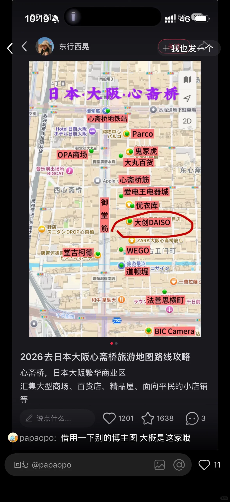

加载中…
大阪住4晚 → 京都中转 → 东京住2晚，示意图非精确比例
真实地图底图：OpenStreetMap · 可拖动、缩放并点击地点
先看区域，再按当天午餐/晚餐进入；地图图片来自你提供的心斋桥路线图

机票 · 酒店 · 交通票券
点「路线」展开当天地图和一键导航
两人共享，完成一项就从列表消失
出发前、购物当天及每次付款前，打开本人支付宝、微信支付，搜索“境外 / 日本 / 出境优惠”等入口，查看当前日本消费券、指定商户券与银行卡活动；入口随版本、账号和所在地变化，以本人APP实时显示为准。先领券或报名，再核对指定分店/品牌、满减门槛、币种、有效期、每日名额、可用银行卡、单笔上限及能否叠加免税/百货优惠/平台返现；不要为凑券超预算。支付宝/微信并非所有店都支持，先问收银员；付款页确认优惠实际生效后再支付。大额LV购买尤其核对排除品牌和优惠上限，不默认所有境外券可用。返现不是即时减价，保留小票与活动规则，按要求完成登记。周游券商品券先兑换、再付款；不确定要使用时先别消耗项目名额。仅作提醒，尚未代领券或报名。
本次2026/10/14–10/21旅行适用10月底前的现行制度：在免税店购买或购物当日到商场指定柜台办理，不是到机场统一补办购物退税；11/1起的新退款制度不适用于此次购物。通常同一店铺同日税前满5,000日元，衣服、鞋、包等10%税率商品对应含税5,500日元；食品可能税率不同。消耗品税前5,000–500,000日元并按要求封装，出境前勿拆封使用；一般物品与消耗品合算、不同租户合算须店员确认。本人携带护照原件（含入境许可证明）、商品、小票和同名付款卡/手机；百货可能扣手续费，含税价除以1.1才是10%税率商品的税前价，不是标价直接打9折。免税商品须带出日本，托运前如需海关检查应先办理。购物前领券并问清排除品牌、门槛、有效期及能否叠加，付款后不要假定可以补优惠。
官方核查日期：2026/10/6；逐日购物点旁附规则与来源，未明确公布的标注待门店确认。
日本观光厅制度切换说明 → · 日本海关出境检查说明 →
进店前搜索准确分店（阪急梅田本店、大丸心斋桥店、日本桥三越本店、日本桥高岛屋等），打开当前官方活动规则并保存活动说明；不要把旧游记中的2%返现或别的分店活动当成此次承诺。2026/10/6公开网页检索未核实这些门店在10/15–10/19适用的大众点评/携程具体返现活动，出发前及购物当天在本人APP内复查。先确认是否需付款前报名/领券/展示返现码、购物后现场登记还是上传小票；再确认折后/税前/实付计算口径、指定品牌与付款方式、额度、名额、最晚提交时间及到账/提现规则。退税退款、95折优惠、商场积分和平台返现是不同项目，能否叠加及能否同时申领两个平台须按活动确认。付款后保留小票、退税单及支付凭证；若需现场核销，当天离店前完成。仅添加行程提醒，尚未替你报名或申领。
大阪交通已决定暂不购买地铁一日券；每人继续使用自己的ICOCA，乘地铁、近铁及JR按实际车程扣费，出发前检查余额。关西周游券和东京地铁 48 小时券都是各自区域的补充票，不能互相替代。
10月中旬大阪、东京日间气温约 20–24℃，早晚会降到 15℃左右，建议带一件薄外套或开衫，京都/奈良户外活动多，穿好走的鞋。